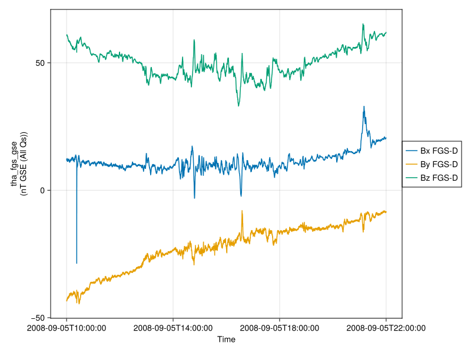
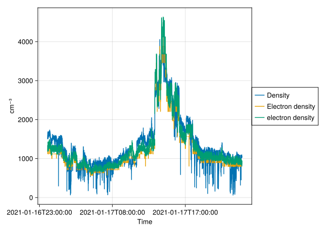
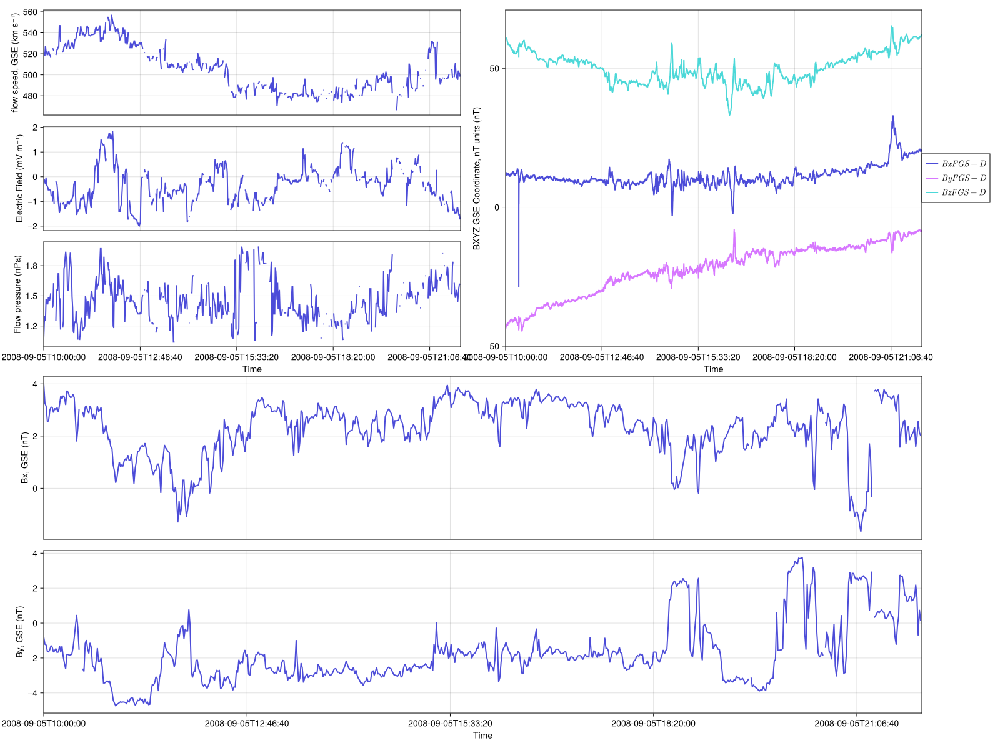

Code
using Speasy
spz = speasy()
using Dates
using DimensionalData
using CairoMakie
using SpaceTools
using Unitful
using LinearAlgebraSpace data analysis toolbox in Julia
Think of SPEDAS in Julia.
using Pkg
Pkg.add("https://github.com/SciQLop/Speasy.jl")
Pkg.add("https://github.com/Beforerr/SpaceTools.jl")
Pkg.add("https://github.com/Beforerr/Beforerr.jl")using Speasy
spz = speasy()
using Dates
using DimensionalData
using CairoMakie
using SpaceTools
using Unitful
using LinearAlgebrat0 = DateTime("2008-09-05T10:00:00")
t1 = DateTime("2008-09-05T22:00:00")
da = get_data("cda/THA_L2_FGM/tha_fgs_gse", t0, t1) |> DimArray┌ 14386×3 DimArray{Unitful.Quantity{Float32, 𝐌 𝐈⁻¹ 𝐓⁻², Unitful.FreeUnits{(nT,), 𝐌 𝐈⁻¹ 𝐓⁻², nothing}}, 2} tha_fgs_gse ┐
├──────────────────────────────────────────────────────────────────────── dims ┤
↓ Ti Sampled{Dates.DateTime} [2008-09-05T10:00:02, …, 2008-09-05T21:59:59.307] ForwardOrdered Irregular Points,
→ tha_fgs_gse Categorical{Symbol} [Symbol("Bx FGS-D"), Symbol("By FGS-D"), Symbol("Bz FGS-D")] ForwardOrdered
├──────────────────────────────────────────────────────────────────── metadata ┤
Dict{String, Any} with 27 entries:
"FILLVAL" => Any[-1.0e30]
"DEPEND_EPOCH0" => "tha_fgs_epoch0"
"FIELDNAM" => "BXYZ GSE Coordinate, nT units"
"VALIDMAX" => Any[25000.0, 25000.0, 25000.0]
"SI_CONVERSION" => "1e-9>T"
"axes" => VariableAxis[VariableAxis(<py speasy.core.data_containe…
"TENSOR_ORDER" => "1"
"SC_ID" => "d"
"DEPEND_1" => "tha_fgs_compno"
"SCALE_TYP" => "linear"
"CALIB_SOFTWARE" => "fgm_calibrate, thm_cal_fgm, thm_cal_fit"
"CATDESC" => "---- FGS (spin-resolution/~3 sec) magnetic field B in…
"DEPEND_TIME" => "tha_fgs_time"
"AVG_TYPE" => "standard"
"DISPLAY_TYPE" => "time_series"
"VALIDMIN" => Any[-25000.0, -25000.0, -25000.0]
"UNITS" => "nT GSE (All Qs)"
"VAR_NOTES" => "Units are in nanotesla"
"REPRESENTATION_1" => "Rep_xyz"
⋮ => ⋮
└──────────────────────────────────────────────────────────────────────────────┘
⋮ ⋱ No more need to get_data and store_data. All the functions and operations that work on abstract array would also work on the time series.
@info da_max = maximum(da)
@info norm.(eachrow(da))[1:10][ Info: 65.44341f0 nT
[ Info: Unitful.Quantity{Float32, 𝐌 𝐈⁻¹ 𝐓⁻², Unitful.FreeUnits{(nT,), 𝐌 𝐈⁻¹ 𝐓⁻², nothing}}[75.64841f0 nT, 75.72411f0 nT, 75.5134f0 nT, 75.73276f0 nT, 75.492195f0 nT, 75.506645f0 nT, 75.522064f0 nT, 75.78088f0 nT, 75.69144f0 nT, 75.647f0 nT]using Test
da1 = get_data("cda/OMNI_HRO_1MIN/flow_speed", t0, t1) |> DimArray
da2 = get_data("cda/OMNI_HRO_1MIN/BX_GSE", t0, t1) |> DimArray
try
da1 + da2
catch e
println(e)
@test e isa Unitful.DimensionError
end
# in different times so add would not work
tspan3 = DateTime("2008-09-05T10:00:00"), DateTime("2008-09-05T11:00:00")
tspan4 = DateTime("2008-09-05T11:00:00"), DateTime("2008-09-05T12:00:00")
da3 = get_data("cda/OMNI_HRO_1MIN/flow_speed", tspan3...) |> DimArray
da4 = get_data("cda/OMNI_HRO_1MIN/flow_speed", tspan4...) |> DimArray
try
da3 + da4
catch e
println(e)
endUnitful.DimensionError(522.0f0 km s⁻¹, 4.01f0 nT)
DimensionMismatch("Lookup values for DimensionalData.Dimensions.Ti of [Dates.DateTime(\"2008-09-05T10:00:00\"), Dates.DateTime(\"2008-09-05T10:01:00\"), Dates.DateTime(\"2008-09-05T10:02:00\"), Dates.DateTime(\"2008-09-05T10:03:00\"), Dates.DateTime(\"2008-09-05T10:04:00\"), Dates.DateTime(\"2008-09-05T10:05:00\"), Dates.DateTime(\"2008-09-05T10:06:00\"), Dates.DateTime(\"2008-09-05T10:07:00\"), Dates.DateTime(\"2008-09-05T10:08:00\"), Dates.DateTime(\"2008-09-05T10:09:00\"), Dates.DateTime(\"2008-09-05T10:10:00\"), Dates.DateTime(\"2008-09-05T10:11:00\"), Dates.DateTime(\"2008-09-05T10:12:00\"), Dates.DateTime(\"2008-09-05T10:13:00\"), Dates.DateTime(\"2008-09-05T10:14:00\"), Dates.DateTime(\"2008-09-05T10:15:00\"), Dates.DateTime(\"2008-09-05T10:16:00\"), Dates.DateTime(\"2008-09-05T10:17:00\"), Dates.DateTime(\"2008-09-05T10:18:00\"), Dates.DateTime(\"2008-09-05T10:19:00\"), Dates.DateTime(\"2008-09-05T10:20:00\"), Dates.DateTime(\"2008-09-05T10:21:00\"), Dates.DateTime(\"2008-09-05T10:22:00\"), Dates.DateTime(\"2008-09-05T10:23:00\"), Dates.DateTime(\"2008-09-05T10:24:00\"), Dates.DateTime(\"2008-09-05T10:25:00\"), Dates.DateTime(\"2008-09-05T10:26:00\"), Dates.DateTime(\"2008-09-05T10:27:00\"), Dates.DateTime(\"2008-09-05T10:28:00\"), Dates.DateTime(\"2008-09-05T10:29:00\"), Dates.DateTime(\"2008-09-05T10:30:00\"), Dates.DateTime(\"2008-09-05T10:31:00\"), Dates.DateTime(\"2008-09-05T10:32:00\"), Dates.DateTime(\"2008-09-05T10:33:00\"), Dates.DateTime(\"2008-09-05T10:34:00\"), Dates.DateTime(\"2008-09-05T10:35:00\"), Dates.DateTime(\"2008-09-05T10:36:00\"), Dates.DateTime(\"2008-09-05T10:37:00\"), Dates.DateTime(\"2008-09-05T10:38:00\"), Dates.DateTime(\"2008-09-05T10:39:00\"), Dates.DateTime(\"2008-09-05T10:40:00\"), Dates.DateTime(\"2008-09-05T10:41:00\"), Dates.DateTime(\"2008-09-05T10:42:00\"), Dates.DateTime(\"2008-09-05T10:43:00\"), Dates.DateTime(\"2008-09-05T10:44:00\"), Dates.DateTime(\"2008-09-05T10:45:00\"), Dates.DateTime(\"2008-09-05T10:46:00\"), Dates.DateTime(\"2008-09-05T10:47:00\"), Dates.DateTime(\"2008-09-05T10:48:00\"), Dates.DateTime(\"2008-09-05T10:49:00\"), Dates.DateTime(\"2008-09-05T10:50:00\"), Dates.DateTime(\"2008-09-05T10:51:00\"), Dates.DateTime(\"2008-09-05T10:52:00\"), Dates.DateTime(\"2008-09-05T10:53:00\"), Dates.DateTime(\"2008-09-05T10:54:00\"), Dates.DateTime(\"2008-09-05T10:55:00\"), Dates.DateTime(\"2008-09-05T10:56:00\"), Dates.DateTime(\"2008-09-05T10:57:00\"), Dates.DateTime(\"2008-09-05T10:58:00\"), Dates.DateTime(\"2008-09-05T10:59:00\")] and [Dates.DateTime(\"2008-09-05T11:00:00\"), Dates.DateTime(\"2008-09-05T11:01:00\"), Dates.DateTime(\"2008-09-05T11:02:00\"), Dates.DateTime(\"2008-09-05T11:03:00\"), Dates.DateTime(\"2008-09-05T11:04:00\"), Dates.DateTime(\"2008-09-05T11:05:00\"), Dates.DateTime(\"2008-09-05T11:06:00\"), Dates.DateTime(\"2008-09-05T11:07:00\"), Dates.DateTime(\"2008-09-05T11:08:00\"), Dates.DateTime(\"2008-09-05T11:09:00\"), Dates.DateTime(\"2008-09-05T11:10:00\"), Dates.DateTime(\"2008-09-05T11:11:00\"), Dates.DateTime(\"2008-09-05T11:12:00\"), Dates.DateTime(\"2008-09-05T11:13:00\"), Dates.DateTime(\"2008-09-05T11:14:00\"), Dates.DateTime(\"2008-09-05T11:15:00\"), Dates.DateTime(\"2008-09-05T11:16:00\"), Dates.DateTime(\"2008-09-05T11:17:00\"), Dates.DateTime(\"2008-09-05T11:18:00\"), Dates.DateTime(\"2008-09-05T11:19:00\"), Dates.DateTime(\"2008-09-05T11:20:00\"), Dates.DateTime(\"2008-09-05T11:21:00\"), Dates.DateTime(\"2008-09-05T11:22:00\"), Dates.DateTime(\"2008-09-05T11:23:00\"), Dates.DateTime(\"2008-09-05T11:24:00\"), Dates.DateTime(\"2008-09-05T11:25:00\"), Dates.DateTime(\"2008-09-05T11:26:00\"), Dates.DateTime(\"2008-09-05T11:27:00\"), Dates.DateTime(\"2008-09-05T11:28:00\"), Dates.DateTime(\"2008-09-05T11:29:00\"), Dates.DateTime(\"2008-09-05T11:30:00\"), Dates.DateTime(\"2008-09-05T11:31:00\"), Dates.DateTime(\"2008-09-05T11:32:00\"), Dates.DateTime(\"2008-09-05T11:33:00\"), Dates.DateTime(\"2008-09-05T11:34:00\"), Dates.DateTime(\"2008-09-05T11:35:00\"), Dates.DateTime(\"2008-09-05T11:36:00\"), Dates.DateTime(\"2008-09-05T11:37:00\"), Dates.DateTime(\"2008-09-05T11:38:00\"), Dates.DateTime(\"2008-09-05T11:39:00\"), Dates.DateTime(\"2008-09-05T11:40:00\"), Dates.DateTime(\"2008-09-05T11:41:00\"), Dates.DateTime(\"2008-09-05T11:42:00\"), Dates.DateTime(\"2008-09-05T11:43:00\"), Dates.DateTime(\"2008-09-05T11:44:00\"), Dates.DateTime(\"2008-09-05T11:45:00\"), Dates.DateTime(\"2008-09-05T11:46:00\"), Dates.DateTime(\"2008-09-05T11:47:00\"), Dates.DateTime(\"2008-09-05T11:48:00\"), Dates.DateTime(\"2008-09-05T11:49:00\"), Dates.DateTime(\"2008-09-05T11:50:00\"), Dates.DateTime(\"2008-09-05T11:51:00\"), Dates.DateTime(\"2008-09-05T11:52:00\"), Dates.DateTime(\"2008-09-05T11:53:00\"), Dates.DateTime(\"2008-09-05T11:54:00\"), Dates.DateTime(\"2008-09-05T11:55:00\"), Dates.DateTime(\"2008-09-05T11:56:00\"), Dates.DateTime(\"2008-09-05T11:57:00\"), Dates.DateTime(\"2008-09-05T11:58:00\"), Dates.DateTime(\"2008-09-05T11:59:00\")] do not match.")Unit is not just a plot label, but also has dimensions meaning. (Unitful.jl integration)
@info da_dim = dimension(da.data[1])[ Info: 𝐌 𝐈⁻¹ 𝐓⁻²f = tplot([da])
f.figure
figure = (; size=(1200, 800))
tvars = [
"cda/THA_L2_FGM/tha_fgs_gsmQ",
"cda/OMNI_HRO_1MIN/flow_speed",
"cda/OMNI_HRO_1MIN/E",
"cda/OMNI_HRO_1MIN/Pressure",
]
tplot(tvars, t0, t1; figure)Can't get THA_L2_FGM/tha_fgs_gsmQ without web service, switching to web service
Can't get THA_L2_FGM/tha_fgs_gsmQ without web service, switching to web service
Can't get THA_L2_FGM/tha_fgs_gsmQ without web service, switching to web service
https://cdaweb.gsfc.nasa.gov/misc/NotesM.html#MMS1_FPI_FAST_L2_DES-DIST
ts0 = "2019-01-02T15" |> DateTime
ts1 = "2019-01-02T22" |> DateTime
tvars = [
"cda/MMS1_FPI_FAST_L2_DES-MOMS/mms1_des_energyspectr_omni_fast",
]
tplot(tvars, ts0, ts1)[ Info: Cannot parse unit keV/(cm^2 s sr keV)
[ Info: Cannot parse unit keV/(cm^2 s sr keV)
[ Info: Cannot parse unit keV/(cm^2 s sr keV)
WebServer (CDAWeb) -> Files -> Data structure (tplot variable / numpy array)
However, loading cdf files is moderately slow, especially for large data. We can improve the performance by disk-caching the data structure (numpy array).
WebServer (CDAWeb) -> Files -> Disk-cached data structure -> Data structure
Use GLMakie to zoom in and Zoom out to explore data.
tplot(tvars, t0, t1; figure)tplotWe are power Matlab users. Some of us are Lisp hackers. Some are Pythonistas, others Rubyists, still others Perl hackers. There are those of us who used Mathematica before we could grow facial hair. There are those who still can’t grow facial hair. We’ve generated more R plots than any sane person should. C is our desert island programming language. We love all of these languages; they are wonderful and powerful. For the work we do — scientific computing, machine learning, data mining, large-scale linear algebra, distributed and parallel computing — each one is perfect for some aspects of the work and terrible for others. Each one is a trade-off. We are greedy: we want more. We want a language that’s open source, with a liberal license. We want the speed of C with the dynamism of Ruby. We want a language that’s homoiconic, with true macros like Lisp, but with obvious, familiar mathematical notation like Matlab. We want something as usable for general programming as Python, as easy for statistics as R, as natural for string processing as Perl, as powerful for linear algebra as Matlab, as good at gluing programs together as the shell. Something that is dirt simple to learn, yet keeps the most serious hackers happy. We want it interactive and we want it compiled.
We want tplot to understand a time series represented as a vector-like / matrix-like (series/heatmap/spectrogram) / Function / String
We want tplot to plot multiple time series on the same figure;
We want tplot to be interactive as well as publication-ready;
and we want tplot to be composable.
using CairoMakie
# using GLMakie
figure = (; size=(1600, 1200))
f = Figure(; figure...)
tvars1 = ["cda/OMNI_HRO_1MIN/flow_speed", "cda/OMNI_HRO_1MIN/E", "cda/OMNI_HRO_1MIN/Pressure"]
tvars2 = ["cda/THA_L2_FGM/tha_fgs_gse"]
tvars3 = ["cda/OMNI_HRO_1MIN/BX_GSE", "cda/OMNI_HRO_1MIN/BY_GSE"]
tplot(f[1, 1], tvars1, t0, t1)
tplot(f[1, 2], tvars2, t0, t1)
tplot(f[2, 1:2], tvars3, t0, t1)
f
https://github.com/Beforerr/SpaceTools.jl